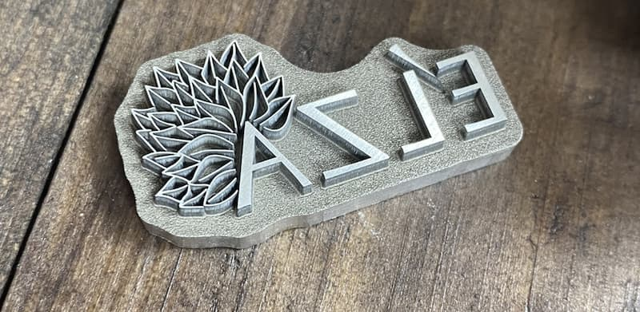
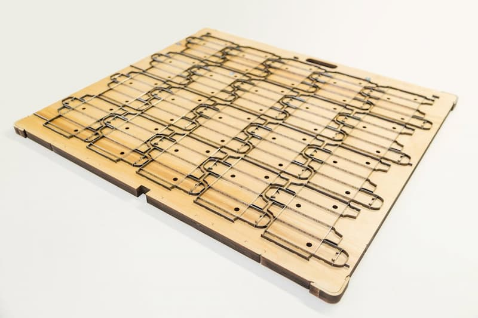

В современном мире, где скорость и качество играют решающую роль, особенно важно иметь надежного партнера в сфере полиграфических услуг. Типография «Лазурь» заботится о комфорте своих клиентов и предлагает уникальные условия хранения всех материалов, связанных с вашими заказами.

Электронные файлы всех выполненных заказов бережно хранятся в течение полутора лет. Это означает, что если вам потребуется повторить печать или внести небольшие изменения в уже существующий макет, вам не придется заново подготавливать всю документацию. Все необходимые файлы будут готовы к работе в любой момент.
Вырубные формы и клише хранятся на протяжении всего времени существования типографии. Это особенно важно для клиентов, которые регулярно заказывают продукцию с использованием специальных форм. Благодаря такому подходу:

Выбирая типографию «Лазурь», вы получаете:
Мы ценим ваше время и деньги, поэтому создали максимально удобные условия для долгосрочного сотрудничества. Доверьте свои заказы профессионалам, и мы позаботимся о том, чтобы каждый ваш проект был выполнен на высшем уровне.
Свяжитесь с нами сегодня, чтобы узнать больше о наших услугах и условиях сотрудничества!